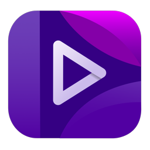

ZPlay
Movies, TV, anime, manga, audiobooks, music and live TV — in one app.
No telemetry. No accounts. No paywall.

Movies, TV, anime, manga, audiobooks, music and live TV — in one app.
No telemetry. No accounts. No paywall.
Most streaming apps ship an analytics SDK, a crash reporter and an account system. ZPlay ships none of them.
No analytics SDK, no crash reporting, no accounts, no “anonymous usage statistics”. The only traffic is the content you asked for. Diagnostics stay on your disk in a file you can read or delete.
GPL-3.0, no paywalled tier, no feature-gating, no upsell screens. The sponsor subsystem that shipped in the upstream fork has been removed outright.
Download a build, run it, hit play. No sign-up wall, no onboarding, no setup wizard. Progress and reading positions save locally from the very first title.
Stale-while-refresh catalogs, bounded image decoding, a pruned asset bundle, and release builds that are minified and resource-shrunk. See the numbers.
46 built-in HTTP providers plus 2 torrent providers, all scraped concurrently — results stream in as they arrive instead of waiting on the slowest source. Full Stremio addon support.
Embedded BitTorrent engine. Streams while downloading, prioritises the pieces playback needs, and picks the right file out of season packs.
Optional Real-Debrid / TorBox integration resolves torrents through your own cloud account instead of the local engine.
A dedicated anime section with its own source extractors and Arabic-anime support.
IPTV portal support (Xtream-style), channel search, favourites and hit tracking.
Reader with horizontal and vertical modes, pinch-zoom, and exact chapter-plus-page resume.
Multi-source aggregator, speed control, sleep timer, chapter navigation, position saved every five seconds.
Full player with search, artists, playlists, likes, quality switching and a persistent mini-player.
Automatic fetching, multi-language selection, timing and size adjustment, dual-engine renderer.
Hardware-decoded playback with Anime4K upscaling shaders, HDR handling, gesture and keyboard controls, PiP and screenshots.
Optional Trakt and Simkl watchlist and history synchronisation — only if you want it.
D-pad navigation and a leanback launcher entry, so it belongs on the TV row.
Every number below is either measured on a release build or verifiable in the repository configuration.
| Area | Result |
|---|---|
| Android release APK | ~48 MB per ABI — minified and resource-shrunk with ProGuard rules |
| Windows release tree | 148 MB total, of which only ~1.35 MB is bundled app assets |
| Shader bundle | 9 Anime4K shaders ship instead of the upstream 39-file set — the unused 30 were extracted on every install without ever reaching the player’s shader chain |
| Launcher art | Only the small icon variant ships; the 1 MB master is build-time input only |
| Catalog loading | Stale-while-refresh — cached catalogs render immediately and refresh underneath, so navigation never blocks on the network |
| Image decoding | Bounded decode plus a shared disk and memory cache, so long scrolling does not spike memory |
| Renderer | Skia is the default backend on Windows, selected natively before the first frame and persisted |
| Diagnosability | Local crash breadcrumbs and a dev-only performance HUD (frames, jank, RSS) |
ZPlay is a fork of PlayTorrio V3 by Ayman. Since forking we have focused on performance, player correctness, and owning our own release path.
Stream-cycle leak fixes and bounded image decoding across the card and slider widgets · Skia as the default Windows renderer · local-only crash breadcrumbs and perf HUD · stale-while-refresh catalogs and cache infrastructure · the sponsor/monetisation subsystem removed completely.
Minified and resource-shrunk release APKs · a pruned asset bundle measured at −2.99 MB · symbol artifacts published for every platform · our own installer identity and a self-updater pointed at our releases rather than upstream’s.
Fixed resume black-screening at its root — the watchdog mis-fired on every resume and its recovery dropped the HTTP headers provider URLs require · resume now verifies a source is reachable before committing · an in-player source switcher available mid-playback · a stalling stream offers a real way out.
Built by CI on every tagged release.
ZPlay-Windows-Setup.exe ZPlay-Windows-x64-Portable.zipapp-arm64-v8a-release.apk app-armeabi-v7a-release.apkZPlay-Linux-x86_64.AppImage ZPlay-Linux-x86_64.tar.gzZPlay-macOS-arm64.dmg ZPlay-macOS-intel.dmgflutter build windows --release — the full instructions are in the
README.